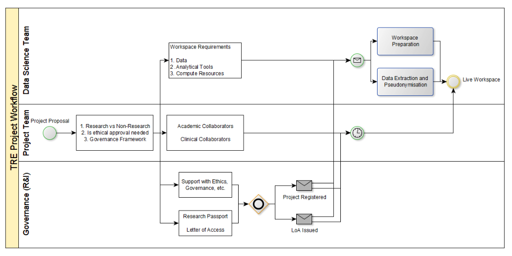

LSC TRE EOI
Contents
LSC TRE EOI#
Draft of LSC components of SNTRE EOI
RESPONDENT DETAILS#
LOCALITY NAME:
LEAD NHS DELIVERY ORGANISATION:
Please indicate which NHS England region your partnership is part of: ☐East of England ☐London ☐Midlands ☐North East and Yorkshire ☐North West ☐South East ☐South West
LEAD RESPONDENT Name:
Job Title:
Organisation:
Email:
Phone:
SENIOR RESPONSIBLE OFFICER (If different to Lead Respondent) Name:
Job Title:
Organisation: Email:
Phone:
DIRECTOR OF FINANCE Name:
NHS Trust:
Email:
Phone:
OPERATIONAL SERVICE LEAD (Requirement to qualify for Wave 1) Name:
Email:
Phone:
SENIOR TECHNICAL LEAD (Requirement to qualify for Wave 1) Name:
Email:
Phone:
PATIENT and PUBLIC INVOLVEMENT and ENGAGEMENT (PPIE) LEAD (Requirement to qualify for Wave 1) Name:
Email:
Phone:
Are you expressing an interest in Wave 1 funding? (Please ensure you meet the eligibility criteria)
☐ Yes ☐ No
If you are expressing an interest in Wave 1 funding, do you have a letter of support from your nominated Director of Finance with commitment to spend £2.5m Public Dividend Capital and £1.3 million revenue by the end of March 2023?
☐ Yes ☐ No
Please attach the letter of support as part of your submission.
MATCHED FUNDING (WAVE 1 ONLY)#
Note
If you are expressing an interest in Wave 1 funding, please outline existing, or planned, local investment in infrastructure or resources which will contribute to ‘in-kind’ matched funding for the SDE for R&D. Please estimate the total value of local ‘in-kind’ investment.
Staff resources:
ACIO Data Science: NHS Consultant, 7 PA (or a proportion of this)
Data Scientist: 8a 1FTE
Cloud engineers: 0.2FTE x 2
Technical architect: 0.1FTE
Infrastructure investment:
(these are approximate - Saeed will have more details)
Azure cloud: £150,000
Includes landing zone and express route as well as WVD/DataPlatform subscriptions
Data Assets investment:
OHDSI/OMOP: £250,000 over 3 years (committed in 21/22)
TriNetX: On-prem hosted solution that will be incorporated into SDE
Data warehouse investment so far?
SDE FOR R&D PARTNERSHIP#
Note
Please provide the full list of organisations that are currently committed to participate in your SDE for R&D programme (Integrated Care Boards, NHS Trusts, Local Authorities, Higher Education Institutions, Academic Health Science Networks/Centres, Biomedical Research Centres, Applied Research Collaboratives etc.)
Lanchashire and South Cumbria
Lancashire and South Cumbria ICS (do we need details here?)
Lancaster University
University of Central Lancashire
University of Manchester
Manchester Metropolitan University
Hartree Centre (confirm with Richard Harding)
Northwest Clinical Research Network (get letter of support from Sally Stewart)
Northwest Applied Research Collaborative
MLCSU (confirm with Phil Rowley/Debbie Bywater)
Northern Health Science Alliance (chase Paul Brown regarding this.)
Do we need a letter of support from all these partners? In which case, we could prepare a template.
Note
Please provide the names of additional organisations that intend to join, or are considering joining, your SDE for R&D programme by March 2025.
?Leeds/Yorkshire
Can we include OMOP federation?
North West Ambulance Service
Social care
Note
What is the size of the local GP registered population covered by the Integrated Care Boards included in your SDE for R&D? How do you intend to scale this to cover a GP registered population of 5 million or more?
North-west: 8M
Lancahsire and South Cumbria ICB: 2M
Greater Manchester ICB: 3M
Chesire and Merseyside ICB: 3M
Source: NHS Digital: Patients Registered at a GP Practice, September 2022
PATIENT AND PUBLIC ENGAGEMENT#
Note
What patient and public engagement activities have you completed which contribute to this project and what were the outcomes?
What future activities are planned?
LSC TRE has been presented to the Lay Research Resource Group that is part of the Lancashire NIHR Clinical Research Facility based at Lancashire Teaching Hospitals NHS Trust.
We are organising further consultations with patient and public engagement groups through the north-west clinical research network (CRN).
Include GM and CM PPI activities.
Note
Please describe your approach to ensuring patient and public involvement in SDE for R&D governance and decision making.
KEY RESEARCH PARTNERSHIPS#
Note
Describe existing successful research partnerships within your locality, particularly those focused on large-scale data sharing and analysis. This may include partnerships with Life Sciences or MedTech companies, Academia, or not-for-profit organisations.
Note
Provide examples of research projects that will make use of this new SDE for R&D infrastructure as it becomes available. What are the anticipated timescales for commencing these projects?
- Neurology Informatics: Lancaster University
Multiple collaborations across several projects with Prof. Emsley, Consultant Neurologist
- Stroke and Epilepsy Research: UCLAN
NLP on EPR free-text, Clare Gordon, Senior Research Fellow/Consultant Stroke Nurse
- Translational AI in Diabetic Foot Ulcer Monitoring: Manchester Metropolitan University
World’s largest dataset of DFU images (18000+), DFU Challenge. Joint funding bid with MMU for 300K which will allow LTH to recruit AI Engineer. Will use LANDER Azure MLStudio and will be supported by Microsoft ($15k secured)
- Natural Language Processing on medical text
King’s College Longon https://cogstack.org/ Multiple use cases: Clinic Letters, Radiology Reports, Coding accuracy of hospital episodes Collaboration with King’s College London
- Friends and Family Test Sentiment Analysis
Imperial College London In collaboration with Continuous Improvement and FFT Teams
- Frailty, Colorectal cancer
Data science student projects led by clinical staff and supported by data science team, Lancaster University and University of Manchester
- Patient Flow Modelling: Lancaster University
Co-design collaboration with Imagination Lancaster and Data Science Institute Multi-disciplinary workshops, complex patient flow, physiological burden and demand modelling
- GynaeOncology Patient Outcomes Dataset
University of Manchester Led by Nick Wood, Consultant Gynae-oncologist and DMD for Women’s and Children’s services
- Risk Stratified Clinical Harm Reviews
Supports pragmatic prioritisation of high risk patients for clinical harm reviews BI Dashboard that uses algorithm running in LANDER data science cloud computing cluster
TECHNOLOGY AND DATA#
Todo:
High level architecture diagrams
Differentiate between TRE and SDE
Include AzureTRE architecture and our work so far
Include ICS BI Datawarehouse details (BedRock) here - and in data assets section next
OHDSI/OMOP
Add section on how this benefits federation and our region
OpenSAFELY proposal that was discussed with Ben Goldacre in July/August
Note
Provide information about your SDE for R&D design and the technologies you intend to use.
This should include:
Technical architecture
Infrastructure and data warehousing
Data processing and curation
Analytical tooling
Privacy Enhancing Technologies
Data discoverability
Lancashire Teaching Hospitals NHS Trust has built a cloud-first, scalable, secure, trusted research environment (TRE) on Microsoft Azure which will enable research, academic and commercial collaboration and support the move to early intervention and prevention.
The TRE architecture is scalable across the ICS and will ensure interoperability to allow federated access and collaboration between teams in different care settings, academia and industry partners across the region, and globally.
LTHTR is also a member of the Health Data Research UK Alliance further demonstrating our commitment to open, collaborative, big-data research for population health.
Core functions#
Highly secure and robust technical architecture AND processes to ensure compliance with 5-safes We have enganged the professional services of Prof. Felix Ritchie, University of West of England and the author of the Five-Safes priniciples to advise us as during the development and implementation of the TRE.
The solution proposed adds immediate value through leveraging proven solutions, standards and best-practice structures already in use across the North West. The proposed solution has interoperability and scalability at the core of its design and allows cooperation between a broad alliance of clinical, industrial and academic contributors.
We propose a decoupled design whereby the analytics layer is developed independent of the data layer while ensuring interoperability between the two.
This will provide quick wins designed around providing actionable insight to pressing ICS priorities by integrating diverse, unique datasets such as: social prescribing, Personal Online Data Stores, ORCHA app prescriptions while allowing for a unified data lake to evolve over time. The analytics layer is not entirely dependent on the underlying data layer to become operational.
The bid builds on existing partnerships and will create a trusted facility for multi-disciplinary, interagency collaboration to provide a richer picture of care and the capacity to upskill the combined workforce, enabling truly joined-up strategic needs assessment and empowering agile, precise population health insights.
The Ethical Assurance, Clinical & Information Governance Frameworks will promote public and professional trust in the secondary use of sensitive data, emphasising the openness of the architecture, transparency of the infrastructure and information flows, and explainability of models used to support decision-making.
The interoperability and open-source assets that power the facility will ‘future-proof’ it to comply with and adapt to technical requirements imposed by national & international funders, enable peer review, and retention of skilled staff to maintain, develop and exploit it. It will reduce data & process duplication and improve analytic efficiencies across the health and social care economy, and facilitate collaboration with industry to get value of out data
SAFE SETTINGS#
Secure, customisable, scalable, collaborative, cost-effective environments for advanced data analytics
SAFE PROJECTS#
TRE DARS + Existing processes (eg. REC)
SAFE PEOPLE#
Researcher training, accreditation; Identity management; User access lifecycle management
SAFE DATA#
Data/Metadata catalogues to empower self-discovery of data assets for research.
Common data models for federated research
Privacy preserving architectures such as OpenSAFELY
Pseudonymisation/anonymisation depending on use cases
SAFE OUTPUTS#
SDC, ML model lifecycle management, explainability tools,
Interoperability with other visualisation / decision support tools
NEXUS Intelligence (Population Health Management Platform)
Aristotle (MLCSU’s visualisation platform to support commissioning)
CIPHA Population Health platform
Business Intelligence
Risk stratification / clinical decision support
Technical Architecture#
Microsoft Azure
Landing Zone, AVD (VDI) environment, TRE environment
Include high level architecture diagrams
Networking#
Express Route connects Azure to On-Prem network
All assets within Azure TRE are protected with private endpoints and accessed through peered private VNETs
Azure Firewall and Bastion setup for vendor access
Data Warehousing#
Currently uses Azure Data Lake Storage V2 (with Azure Files, Blob, Storage Queues and Table storage)
Proposal to use Azure Synapse / Snowflake
Analytical tooling#
JupyterHub on Azure Kubernetes Service
Language support: Python, R, Julia, Octave
Interface support: JupyterLab, Jupyter Notebooks, RStudio Server
Azure Virtual Desktop
Custom built Windows 10 Desktop Enterprise Data Science Image
Language support: Python, R (and possibly any other as required)
IDE support: VSCode, Jupyter, RStudio
Database tools: SQL Server Managament Studio, DBeaver, DBBrowser
Statistical software: JASP
Productivity tools: Office 365
OHDSI Analytics Stack#
OHDSI (Observational Health Data Sciences and Informatics) is multi-stakeholder, interdisciplinary collaborative to derive value out of health data through large-scale analytics using open-source tools
The OMOP - Common Data Model allows for the systematic analysis of disparate observational databases by transforming data contained within those databases into a common format (data model). This allows for federated analyses of multiple such databases held at different sites using standard analytic routines without the need to share the underlying data.
The OHDSI network have also created Athena, a searchable repository of harmonised standard vocabularies. This is used to map source data to internationally recognised ontologies such as SNOMED, ICD10, LOINC or other ontology of choice, making it interoperable with other similarly mapped data
Once source data has been converted into the OMOP model, this can be subject to exploration and advanced analytics using a large ecosystem of open-source tools.
ATLAS is an open source software tool for researchers to conduct scientific analyses on standardized observational data converted to the OMOP Common Data Model V5. Researchers can create cohorts by defining groups of people based on an exposure to a drug or diagnosis of a particular condition using healthcare claims data. ATLAS has vocabulary searching of medical concepts to identify people with specific conditions, drug exposures etc. Patient profiles can be viewed within a specific cohort allowing visualization of a particular subject’s health care records. Population effect level estimation analyses allows for comparison of two different cohorts and leverages R packages.
ATLAS by design does not reveal patient identifiable information and the built-in privacy preserving features of the OHDSI stack can be enhanced by following further steps during the data transformation process as described here https://ohdsi.github.io/CommonDataModel/cdmPrivacy.html.
{kind=link}
Fig. 1 OHDSI ATLAS Web Interface#
HADES is a set of open source R packages for large scale analytics, including population characterization, population-level causal effect estimation, and patient-level prediction.
OHDSI International Community
Global collaborators: https://www.ohdsi.org/who-we-are/collaborators/ UK Partners: https://www.ehden.eu/datapartners/
Note
Outline your roadmap to meet the mandatory requirements for SDE accreditation. See (Appendix C) for full detail of requirements.
In very simple terms, LSC intend to work with Microsoft to further co-develop the open source AzureTRE (https://microsoft.github.io/AzureTRE/) architecture. Include details of Azure TRE here.
Map some of this to Appedix C (SDE specifications):
Metadata catalogue and self-discovery, eg. https://github.com/amundsen-io/amundsen or Azure Purview
Data governance and data lifecycle managememt - Azure Purview
Workspace level data governance - eg. Azure ML workspace capabilities
Tools for anonymisation/pseudonymisation eg. https://amnesia.openaire.eu/
DATA ASSETS#
Todo#
Shorten this section. Move some of this to the technology and data section
Add links to OHDSI web resources
Include CDM image
Note
What data assets do you intend to make available to researchers in your SDE for R&D? What data assets will be available by March 2025?
A template is provided (Appendix F) for you to complete, should you wish.
OHDSI/OMOP#
Lancashire Teaching Hospitals NHS Trust has built a cloud-first, scalable, secure, trusted research environment (TRE) on Microsoft Azure which will be fed by this warehouse, enabling research, academic and commercial collaboration and support the move to early intervention and prevention.
The TRE architecture is scalable across the ICS and will ensure interoperability to allow federated access and collaboration between teams across care settings as well as in academia.
LTHTR is also a member of the Health Data Research UK Alliance further demonstrating our commitment to open, collaborative, big-data research for population health.
Standardising multiple data sources into a single common data model has significant benefits that include easier data discovery, reproducible analysis and federated research using anonymised datasets.
LTH has used Quadramed (Harris Healthcare) as its primary electronic health record (EHR) for nearly 15 years. This has resulted in a large amount of longitudinally collected patient data for over 2.2 million patients. LTH also has multiple other application specific databases that continue to collect valuable data.
At present this data is stored in multiple data silos in non-standard data models and databases which makes large scale data analytics very difficult and often impossible. This poses significant problems in getting value out of this data for the benefit of our patients through service improvement projects or research. Moreover, we are unable to collaborate with other NHS organisations both within the ICS and the wider NHS without allocating significant resources to standardising data to a conformant format.
Data standardization is the critical process of bringing data into a common format that allows for collaborative, large-scale analytics, and sharing of sophisticated tools and methodologies. The Observational Health Data Sciences and Informatics (or OHDSI, pronounced “Odyssey”) program is a multi-stakeholder, interdisciplinary collaborative to bring out the value of health data through large-scale analytics. The OMOP Common Data Model allows for the systematic analysis of disparate observational databases.

Fig. 2 OMOP Common Data Model 5.4#
The concept behind this approach is to transform data contained within those databases into a common format (data model) as well as a common representation (terminologies, vocabularies, coding schemes), and then perform systematic analyses using a library of standard analytic routines that have been written based on the common format. Once a database has been converted to the OMOP CDM, evidence can be generated using standardized analytics tools.
OHDSI have developed Open-Source tools for data quality and characterization, medical product safety surveillance, comparative effectiveness, quality of care, and patient-level predictive modelling, but there are also other sources of such tools, some of them commercial.
OPERATIONS#
Note
Describe the operational model for your SDE for R&D. This should cover:
Operational and management services
Technical and data
Commercials & finance
Comms & business development
User permissions
Customer account management and researcher support
GOVERNANCE#
Note
Describe the leadership and governance structure for your SDE for R&D.
This should cover:
Leadership and management team (e.g., technical, operational, information governance, PPIE, commercial leads)
Governance structure, including stakeholder representation
1 NW TRE Steering Group with equal representation from all ICBs 3 ICB level TRE working groups
Composition:
NHS
Academia
Commercial
INFORMATION GOVERNANCE AND ETHICS#
Note
Describe the process researchers will go through to obtain permissions to access and analyse data in a workspace in your SDE for R&D. This should cover:
User accreditation and permissions
Data Access Committee(s)
Ethics
GM have already solved this to a large extent.
Precedents to build upon:
Flowcharts:

FUNDING#
Note
If you receive investment to establish a SDE for R&D outline at a high-level how you intend to spend both the capital and revenue funding that will be available to you by March 2025.
SUPPORTING INFORMATION#
Note
Provide details of any other supporting information you wish to include which has not been covered elsewhere.